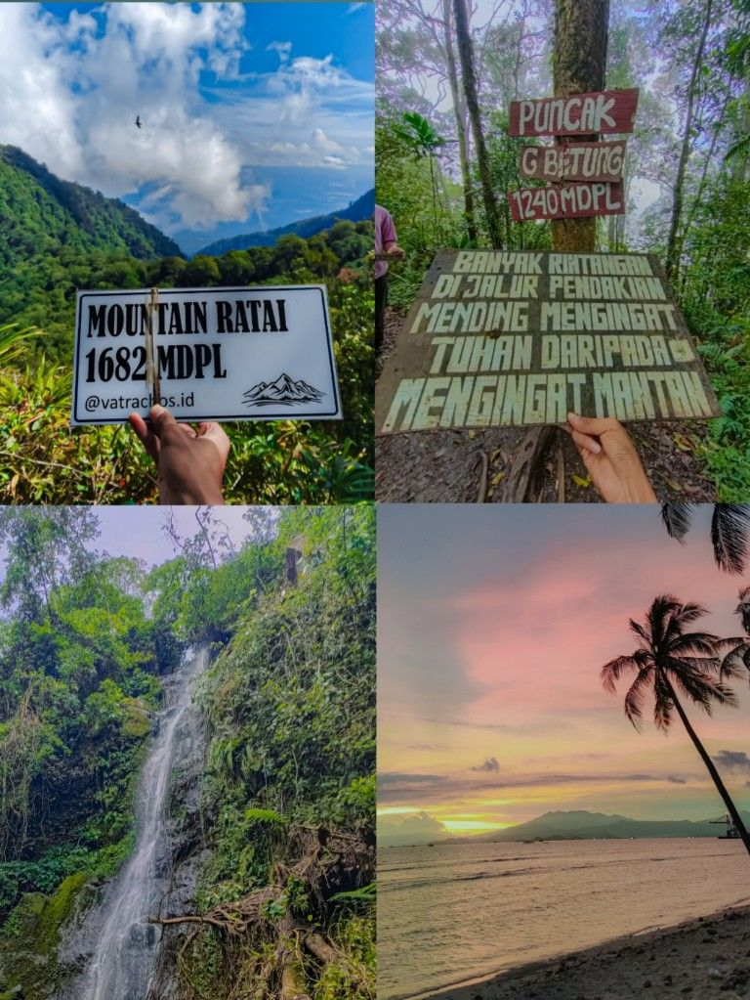

PERTABAS adalah sebuah gerakan, komunitas, atau platform yang mengusung semangat eksplorasi, keberanian, dan kebebasan dalam menjelajahi dunia tanpa batasan. Dengan filosofi "Petualangan Tanpa Batas", PERTABAS mendorong setiap individu untuk keluar dari zona nyaman, menghadapi tantangan, dan menemukan makna hidup melalui pengalaman langsung di alam, budaya, maupun kehidupan sosial.
PERTABAS bukan hanya soal perjalanan fisik, tetapi juga petualangan batin—menemukan jati diri, memperluas wawasan, serta membangun koneksi dengan lingkungan dan sesama manusia.
PERTABAS bukan sekadar tentang pergi ke suatu tempat, melainkan tentang menemukan makna hidup melalui keseimbangan antara penjelajahan dunia luar dan pengembangan diri sendiri.